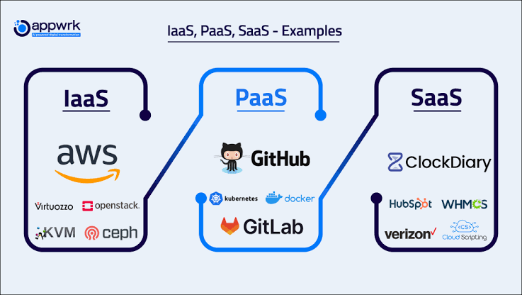
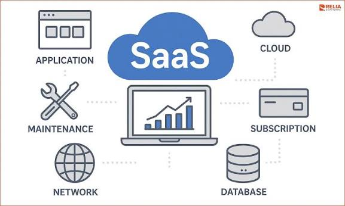
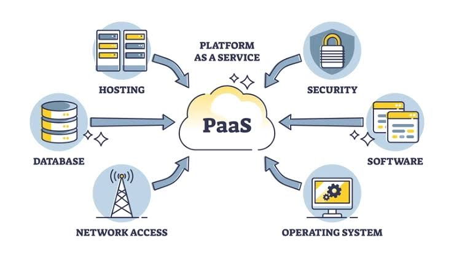
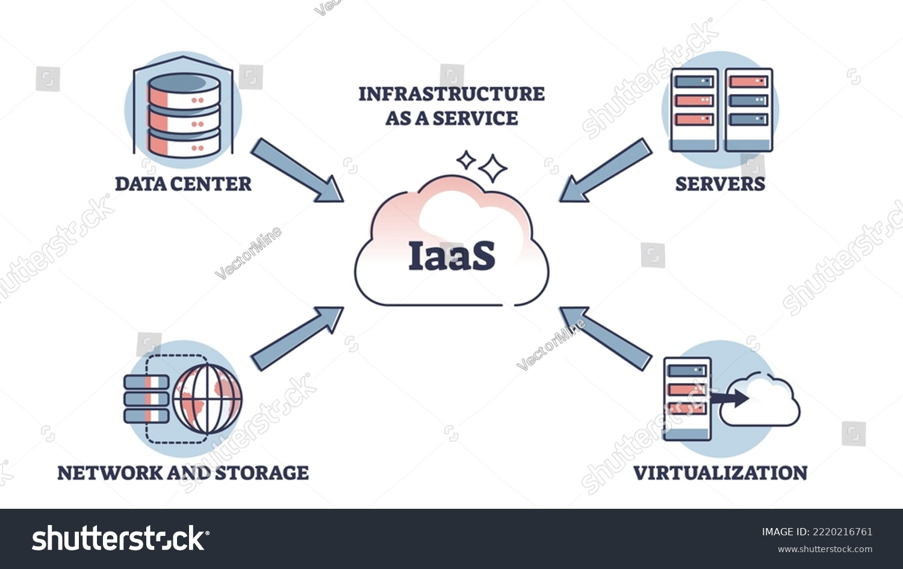
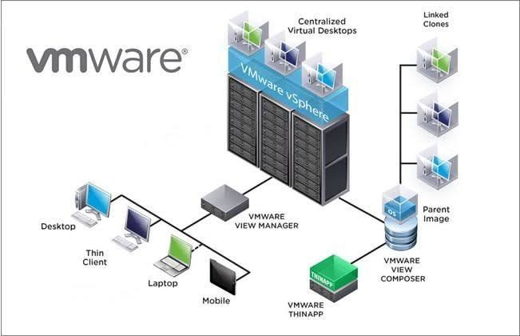
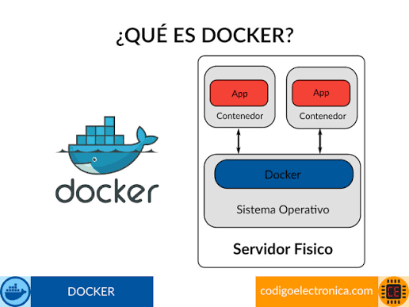

Cloud Computing
Entrega bajo demanda de recursos informáticos (servidores, almacenamiento, redes y software) a través de Internet con escalabilidad flexible y pago por uso.
Conceptos esenciales e ilustraciones sobre computación en la nube, modelos de servicio, virtualización y contenedores.

Entrega bajo demanda de recursos informáticos (servidores, almacenamiento, redes y software) a través de Internet con escalabilidad flexible y pago por uso.

Aplicaciones completas alojadas en la nube a las que el usuario accede mediante un navegador web sin instalar ni administrar infraestructura (ej. Gmail, Microsoft 365).

Plataforma en la nube que provee entorno de ejecución, sistema operativo y bases de datos listos para desarrollar y desplegar aplicaciones sin gestionar el hardware.

Alquiler de infraestructura virtualizada (máquinas virtuales, almacenamiento y redes) donde el administrador controla el sistema operativo y el software instalado.

Tecnología que divide un servidor físico en múltiples máquinas virtuales independientes mediante un hipervisor, ejecutando distintos sistemas operativos de forma aislada.

Plataforma que empaqueta aplicaciones y sus dependencias dentro de contenedores ligeros y portables que comparten el kernel del sistema operativo anfitrión.